← Firdawsi / فردوسيThe quiet centre الفناء الهادئ
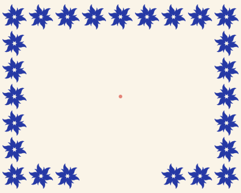
The courtyard الفناء
An opening in the lower border invites the eye inward. A single coral point holds the empty space.فتحة في الحافة السفلى تدعو العين إلى الداخل، ونقطة مرجانية تستقر في قلب الفراغ.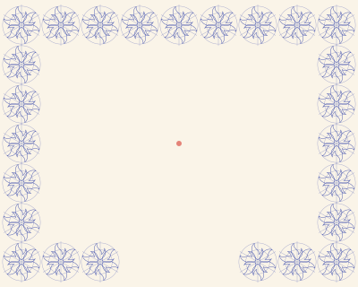
How it is drawn خطوط الإنشاء
Six leaves turn about each centre. The border stops on either side of the entrance.تدور ستّ ورقات حول كل مركز، وتتوقف الزخرفة على جانبي المدخل.Gardens of light حدائق النور
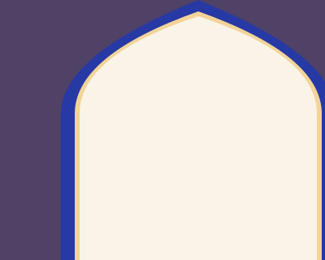
Threshold العتبة
A thin gold edge catches the light at the opening.يلتقط شريط ذهبي رفيع الضوء عند المدخل.Courtyard الفناء
The garden gathers at the edges.تجتمع أوراق الحديقة عند الأطراف.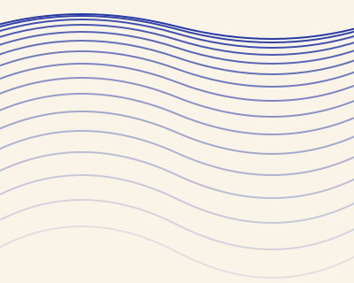
Water الماء
The ripples grow farther apart as their colour fades.تتباعد التموجات ويخفت لونها تدريجياً.Principles in a drawing المبادئ في الرسم
Welcome الترحيب
Leave a way in.نترك مدخلاً مفتوحاً.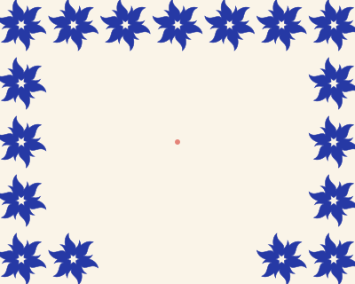
Tranquillity الطمأنينة
Fewer, larger blooms slow the border’s rhythm.أزهار أكبر وأقل عدداً تمنح الحافة إيقاعاً أهدأ.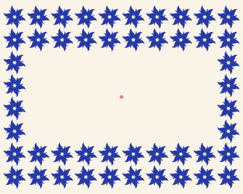
Beauty الجمال
One radius governs every leaf cluster around the enclosure.يضبط نصف قطر واحد عناقيد الأوراق حول الفناء.One garden, three lights حديقة واحدة في ثلاثة أضواء
Porcelain الخزف
Cobalt gives the pale ground a crisp edge.يرسم الأزرق الكوبالتي حدوداً واضحة على الأرضية الفاتحة.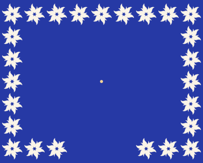
Cobalt الكوبالت
Pale leaves turn the edge into a ring of light.تصنع الأوراق الفاتحة طوقاً من نور.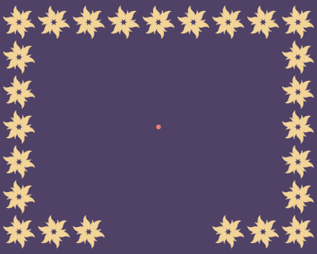
Dusk الغسق
Gold warms the violet shade.يمنح الذهبي الظل البنفسجي دفئاً.Field and ornament النسيج والزخرفة
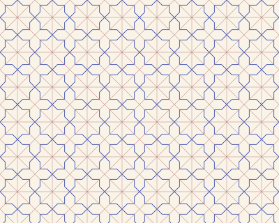
Eight-fold construction هندسة ثمانية
Diagonals and axes locate the points of a star in a square repeat.تحدّد الأقطار والمحاور رؤوس النجمة في وحدة مربّعة.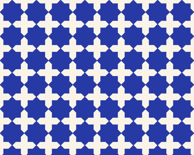
Star and neighbour النجمة وجارتها
After the atlas’s Andalusi khatam study. Porcelain picks out the crosses between cobalt stars.دراسة تستلهم الخاتم الأندلسي في الأطلس. يكشف لون الخزف الأشكال المتصالبة بين النجوم الزرقاء.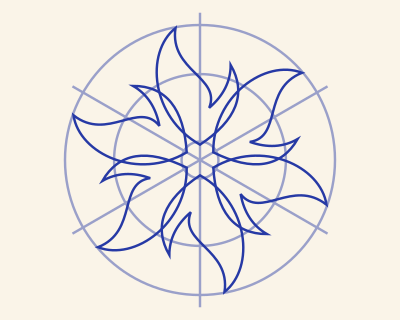
Six-fold construction هندسة سداسية
One curved leaf turns in steps of sixty degrees.تتكرر الورقة المنحنية بدوران قدره ستون درجة.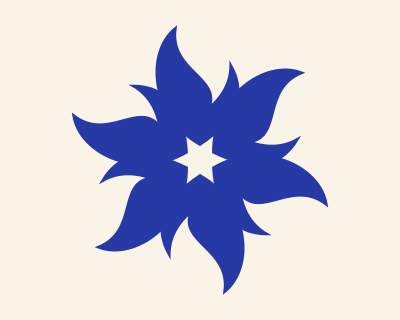
Botanical medallion جامة نباتية
A contemporary study after the atlas’s Ottoman Rumi family. Six tips turn around a small opening.دراسة معاصرة تستلهم زخارف الرومي العثمانية. تدور ستّ وريقات حول فراغ صغير.